Authors: Quang Le, Brian R. York, Cherngye Hwang, Xiaoyong Liu, Tsann Lin, Xiaoyu Xu, Yudi Wang, Jia Li, Mazin Osman, Katherine Le, Maher Osman, Son Le, Lei Xu, Maki Maeda, Tuo Fan, Yu Tao, Hisashi Takano, Sho Kagami, Ohiro Fujie, Pham Nam Hai
Type: experiment · Category: other · PDF: https://arxiv.org/pdf/2608.20021v1
Analysis basis: full PDF text, analyzed in chunks
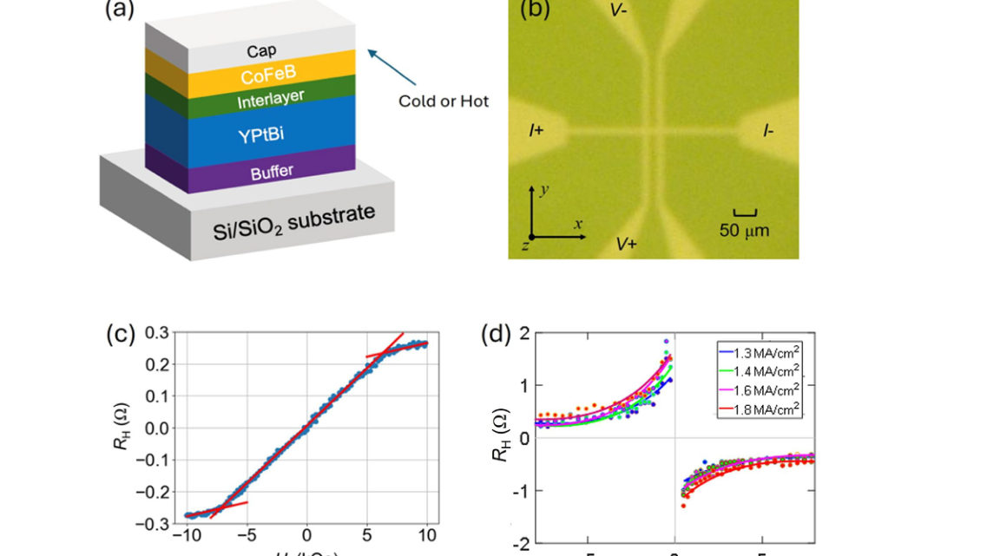
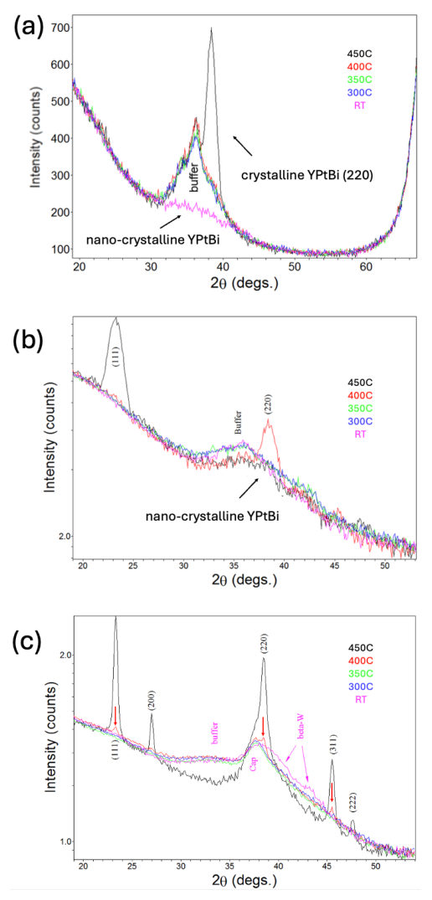
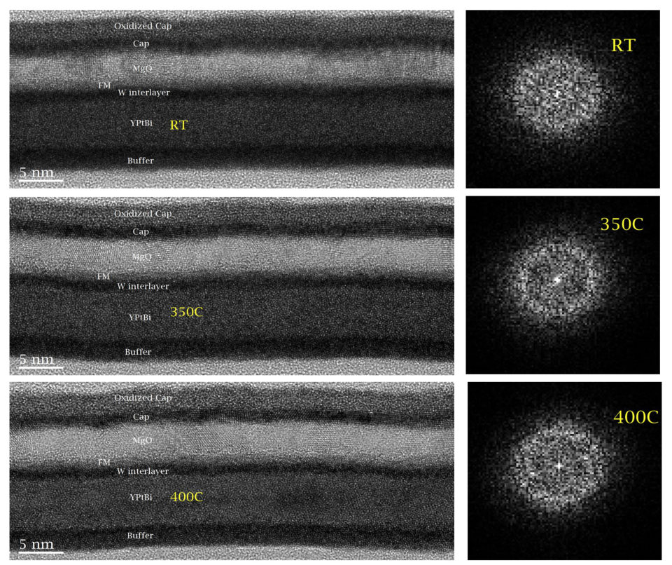
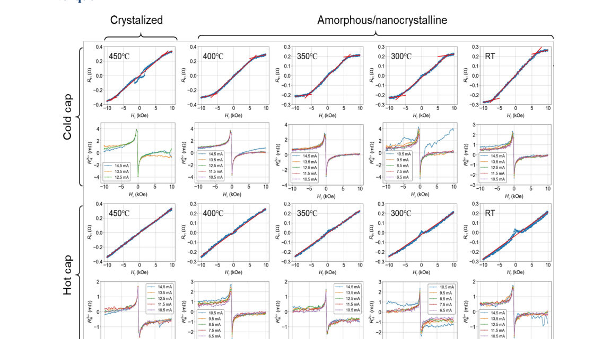
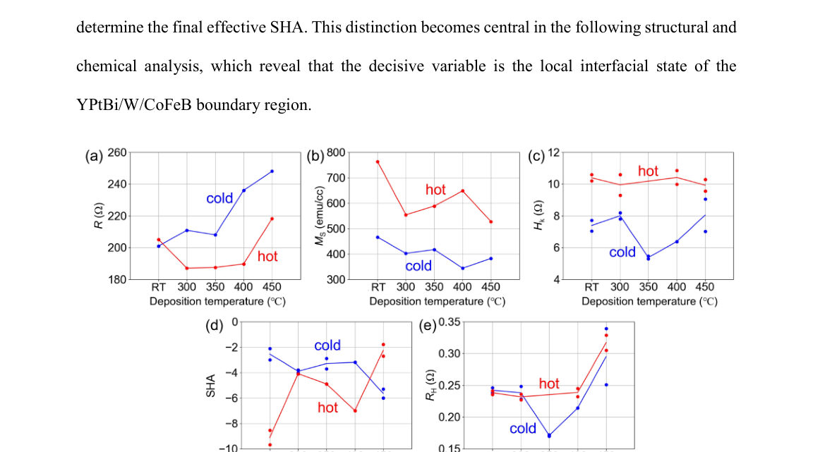
Summary. This work demonstrates that high spin-orbit torque efficiency in YPtBi heterostructures can be achieved in an amorphous or weakly nanocrystalline state, making the material compatible with standard semiconductor back-end processing. The key finding is that the SOT response is governed by the chemical modification of the YPtBi surface layer by W, providing a crucial design rule for next-generation spintronic devices.
Why it may be interesting. While focused on condensed matter spintronics, the rigorous methodology of decoupling macroscopic transport properties from underlying microscopic structural changes (amorphous vs. crystalline) is highly relevant to understanding complex, non-equilibrium quantum materials.
Main problem. The study aims to determine if a high, effective Spin-Orbit Torque (SOT) response can be maintained in YPtBi/W/CoFeB heterostructures for spintronic devices without requiring bulk crystallization, which is essential for Back-End-of-Line (BEOL) compatibility.
Main result. The large effective SOT response persists robustly in the amorphous or weakly nanocrystalline state (up to 400 °C), indicating that the spin-orbit torque is controlled by the chemistry of the upper YPtBi/W interface, not bulk crystal order.
Method. The research combines advanced magnetotransport measurements (Anomalous/Harmonic Hall) with structural characterization techniques like XRD, TEM, XRR, and EELS to correlate electronic response with local atomic structure.
Model / system. The physical system is a YPtBi/W/CoFeB multilayer stack deposited on Si/SiOₓ substrates. The analysis models the effective SOT angle ($ heta_{ ext{SH}}^{ ext{eff}}$) based on contributions from the YPtBi and the W(Pt) interlayer, focusing on interfacial chemistry.
Key observables. Effective damping-like SOT efficiency ($ heta_{ ext{SH}}^{ ext{eff}}$), Anomalous Hall resistance, and interfacial W concentration.
Important parameters / regimes. Deposition temperature range (RT to 400 °C), W concentration at the YPtBi/W boundary, and the structural state (amorphous vs. crystalline).
Assumptions / limitations. The dominant control variable for the SOT response is the local electronic structure modified by W incorporation at the upper YPtBi interface, rather than the bulk crystal structure.
Figures summary. Figures illustrate the stack architecture, AHE loops, and harmonic Hall signals. Structural analysis (XRD, XRR) tracks the transition from amorphous to crystalline states, while EELS profiles map the chemical grading at the interfaces.
Paper structure. The paper systematically investigates the thermal stability of the SOT response, rules out bulk crystallization as the source of the effect, and finally uses interfacial chemical analysis (W concentration) to pinpoint the true physical mechanism governing the large negative $ heta_{ ext{SH}}^{ ext{eff}}$.
Spin-orbit torque (SOT) devices require spin-source materials that combine efficient charge-to-spin conversion with back-end-of-line (BEOL) thermal compatibility. Here, we show that YPtBi/W/CoFeB heterostructures deposited directly on Si/SiOx remain predominantly amorphous or weakly nanocrystalline from room temperature to 400 °C while preserving a large effective damping-like SOT response. Anomalous Hall and harmonic Hall measurements, together with X-ray diffraction, cross-sectional transmission electron microscopy, X-ray reflectivity, and electron energy-loss spectroscopy, show that the response does not correlate with bulk crystallization of YPtBi. Instead, the interfacial analysis indicates that the strongest trend of the spin Hall angle is associated with the chemistry of the upper YPtBi/W boundary: the effective SOT response tracks the integrated W concentration at that YPtBi surface. Meanwhile, a two-spin source analysis shows that the Pt-W-rich interlayer provides only a small positive correction, insufficient to explain the large negative effective spin Hall angle by itself. The dominant control variable is therefore inferred to be the incorporation of W into the upper YPtBi interface, which plausibly modifies the local electronic structure of YPtBi and amplifies the stack-level response. These results provide a more physically constrained interpretation of the stack behavior and identify a BEOL-compatible route to disordered topological spin-source layers for scaled SOT memory and compute-in-memory hardware.
Authors: Tetsuro Misawa, Shigeyuki Ishida, Hiroshi Eisaki, Yukinori Morita, Shinichi Ogawa, Chiharu Urano
Type: both · Category: strongly correlated electrons · PDF: https://arxiv.org/pdf/2608.20109v1
Analysis basis: full PDF text, analyzed in chunks
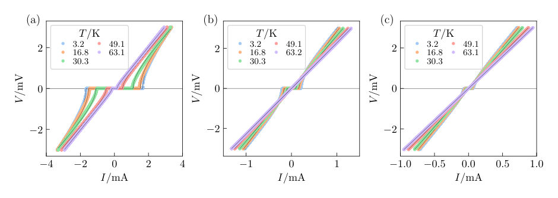
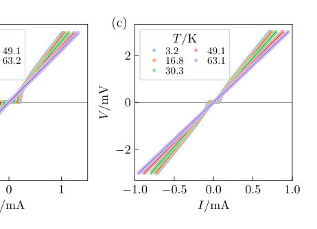
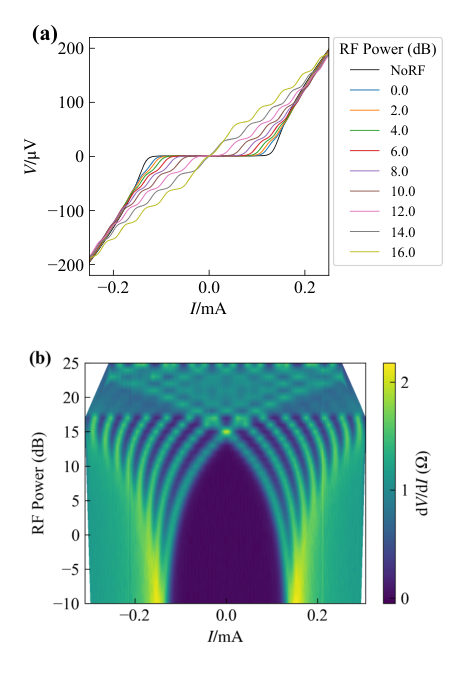
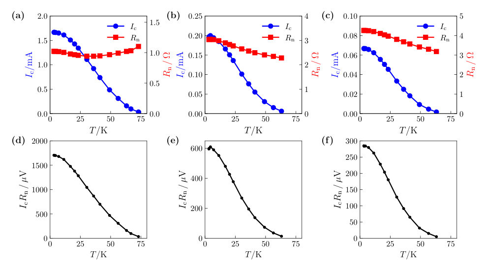
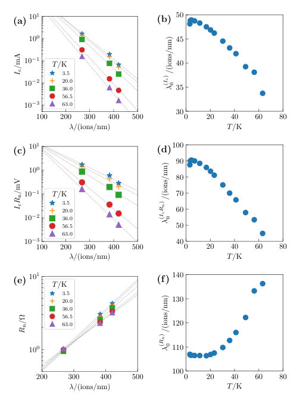
Summary. This work investigates Josephson transport in YBCO weak links created by helium-ion irradiation, using a diffusive-SNS junction model. By analyzing the temperature and dose dependence of critical current, the authors argue that the observed changes are best explained by a reduction in the local density of states at the interface. This provides a physics-based framework for designing and understanding superconducting nano-junctions in correlated materials.
Why it may be interesting. The analysis of superconducting weak links, especially in high-Tc cuprates, touches upon proximity effects and the nature of the superconducting order parameter, which are central topics in strongly correlated electron physics.
Main problem. The study aims to elucidate the underlying physical transport mechanisms governing Josephson current in YBCO weak links created by focused helium-ion-beam irradiation.
Main result. The transport behavior is successfully described by a diffusive SNS junction model, suggesting that the suppression of critical current and $I_cR_n$ is primarily due to a reduction in the local density of states (DOS) at the interface.
Method. The authors combine experimental measurements of $I-V$ characteristics and microwave response with theoretical analysis based on the diffusive-SNS-junction model.
Model / system. The physical system is YBCO thin films patterned into Josephson weak links. The theoretical framework employed is the diffusive-SNS-junction model, which treats the weak link as a diffusive metallic interlayer.
Key observables. Critical current ($I_c$), $I_cR_n$ product, normal state resistance ($R_n$), and their dependence on irradiation dose and temperature.
Important parameters / regimes. Irradiation dose ($\lambda$), effective Thouless energy ($E_T$), and the local density of states ($N(0)$).
Assumptions / limitations. The weak-link region can be modeled as a diffusive metallic interlayer, and the analysis assumes the applicability of the diffusive proximity coupling theory.
Figures summary. Figures illustrate $I-V$ characteristics at various doses, the exponential decay of $I_c$ and $I_cR_n$ with dose, and theoretical plots showing the dose dependence of $E_T$, $I_{cRn}/E_T$, and $1/(E_T R_n)$.
Paper structure. The paper first establishes the experimental setup and measurements (I-V curves, Shapiro steps) confirming Josephson junction formation. It then applies the diffusive-SNS model to analyze the temperature and dose dependence of transport parameters, concluding that DOS reduction is the unifying physical mechanism.
Fabrication of YBCO weak links by focused helium ion beam irradiation is a promising approach for realizing high-temperature superconducting Josephson junction devices. Although empirical dose-characteristic relationships have been established, the underlying transport mechanisms remain unclear. In this study, we perform a detailed investigation of the transport properties of YBCO weak links fabricated using a helium ion microscope (HIM) and provide a unified phenomenological description of the observed behavior based on the theory of SNS junctions with a diffusive metallic interlayer. We demonstrate that the temperature dependence of the critical current $I_{\mathrm{c}}$ and the $I_{\mathrm{c}}R_{\mathrm{n}}$ product are well described by diffusive SNS junction models over a wide temperature range. Analyses show that the observed dose dependences of $I_{\mathrm{c}}$ and $I_{\mathrm{c}}R_{\mathrm{n}}$ cannot be explained solely by variations in the effective Thouless energy $E_{\mathrm{T}}$. The discrepancy suggests reduced interface transparency and a reduction in the density of states, leading to a decrease in the effective number of conducting channels contributing to transport. This interpretation is also consistent with the observed exponential increase in $R_{\mathrm{n}}$ with irradiation dose. These results provide a diffusion-based framework for understanding Josephson transport and guiding junction design in helium-ion-irradiated YBCO weak links.
Authors: Liu Xuejuan, Zheng Xingen, Li Zhengyi, Zhang Zhizhi, Li Xiaoguang, Sun Haipeng, Li Hui, Zhou Cangtao
Type: theory · Category: other · PDF: https://arxiv.org/pdf/2608.19647v1
Analysis basis: full PDF text, analyzed in chunks
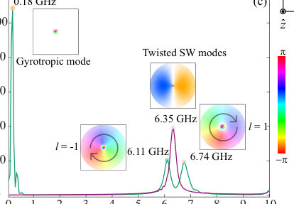
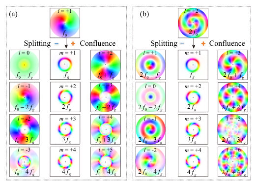
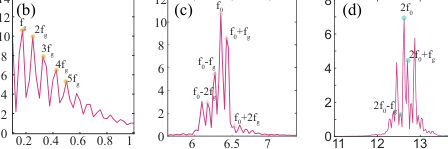
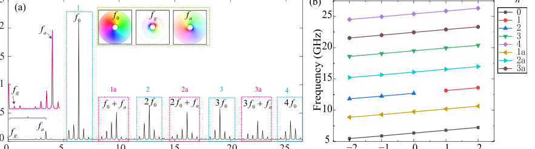
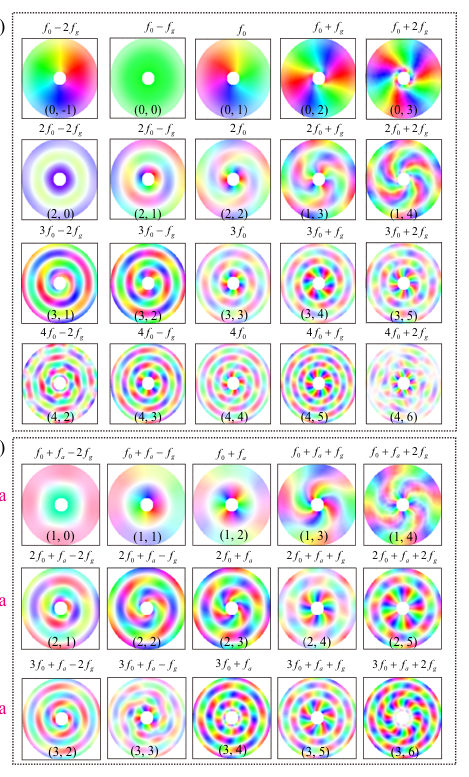
Summary. This work reports on the generation and control of twisted magnon frequency combs in ferromagnetic nanorings using micromagnetic simulations. The authors show that the comb structure is highly sensitive to the hole size, which can introduce new modes to dramatically increase spectral density. Furthermore, an external magnetic field allows for continuous, reversible tuning of the comb spacing, establishing the system as a versatile platform for nonlinear magnonics.
Why it may be interesting. The strong nonlinear coupling between collective excitations (vortex gyration and spin waves) and the ability to tune this spectrum using geometry and external fields provides a rich platform for studying nonlinear wave dynamics in condensed matter systems.
Main problem. The study investigates the emergence and tunability of twisted magnon frequency combs (tMFCs) in ferromagnetic nanorings.
Main result. The geometry of the nanoring, particularly the hole size, and the application of external magnetic fields allow for the precise control and densification of the magnon frequency comb spectrum.
Method. The research relies on micromagnetic simulations solving the Landau-Lifshitz-Gilbert equation and analyzing the resulting spectra using Fast Fourier Transform (FFT).
Model / system. The physical system is a ferromagnetic nanoring, modeled using micromagnetics. Key excitations include magnetic vortices and quantized azimuthal/radial spin-wave modes, whose nonlinear coupling drives the comb formation.
Key observables. Frequency comb structure (tMFCs), comb spacing, sideband multiplicity, and spectral symmetry/asymmetry.
Important parameters / regimes. Hole diameter ($2r$), applied in-plane magnetic field ($H_y$), and the ratio of the hole size to the ring width.
Assumptions / limitations. The analysis assumes the validity of the LLG equation and focuses on nonlinear coupling mechanisms like three-magnon and four-wave mixing.
Figures summary. Figures illustrate the spatial magnetization configurations and the resulting FFT spectra, comparing nanodisks, small-hole rings, and large-hole rings to show the evolution from discrete sidebands to dense, fine-tooth combs.
Paper structure. The paper progresses by first establishing the basic tMFC generation in nanorings, then detailing how increasing the hole size enriches the spectrum via new modes, and finally demonstrating continuous tuning and field-induced asymmetry using an external in-plane magnetic field.
We report the emergence of twisted magnon frequency combs (tMFCs) and their higher-order modes in ferromagnetic nanorings, arising from strong nonlinear coupling between vortex-core gyration and azimuthal spin-wave modes. The comb lines carry distinct orbital angular momentum with quantum numbers spaced by unity, and their formation obeys selection rules governed by simultaneous conservation of energy and angular momentum. We demonstrate that the hole diameter serves as a powerful tuning parameter: reducing the hole size preserves the conventional tMFC, whereas increasing it introduces an additional magnon mode that dramat?ically densifies the comb via four-wave mixing, boosting the sideband multiplicity by an order of magnitude. Moreover, an external in-plane magnetic field enables continuous, reversible tuning of the comb spacing by dis?placing the vortex core and modifying its confinement potential, with the hole-induced geometric pinning giving rise to asymmetric switching and hysteresis under opposite field polarities. Our results establish the tMFC as a versatile platform for nonlinear magnonics, with potential applications in tunable frequency comb generation and precision metrology.